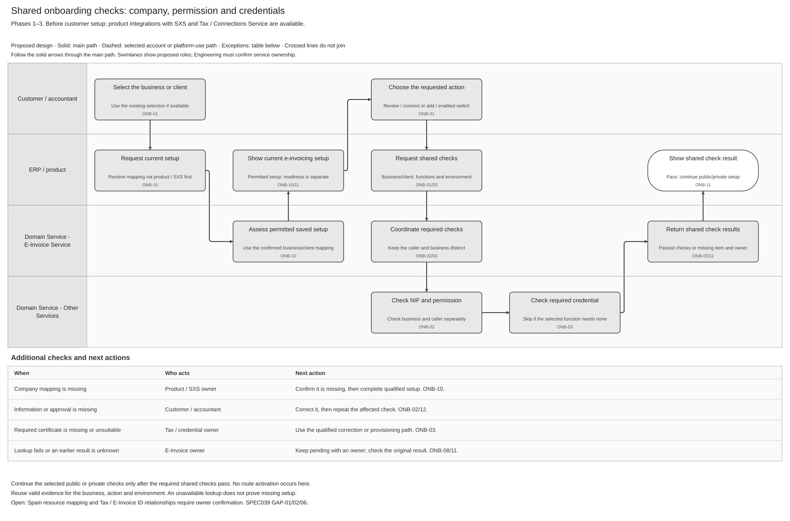
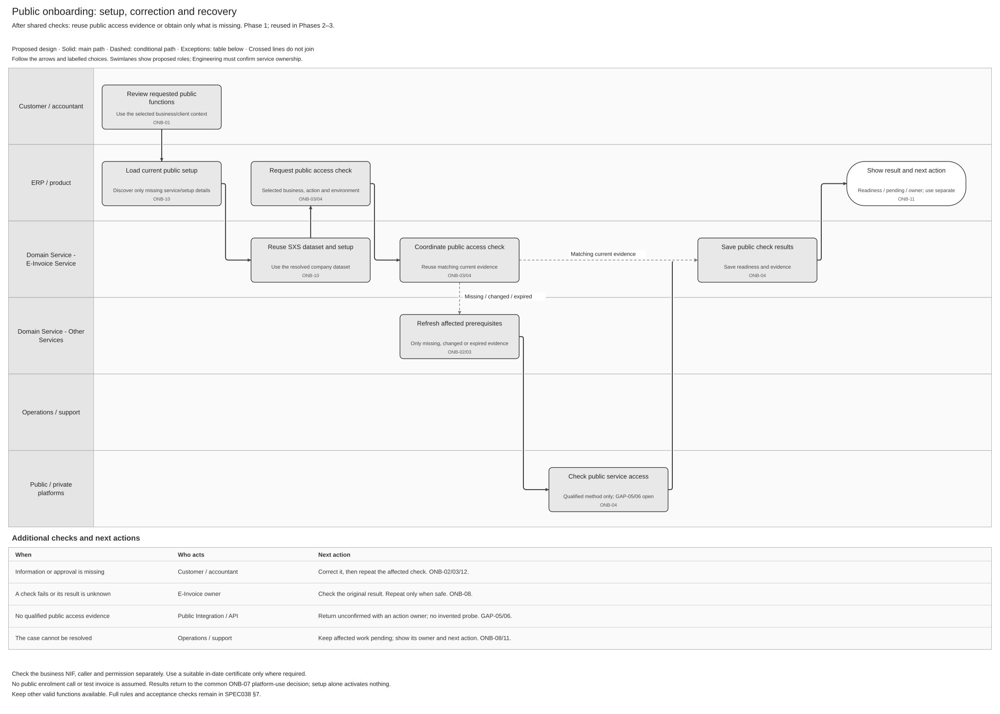
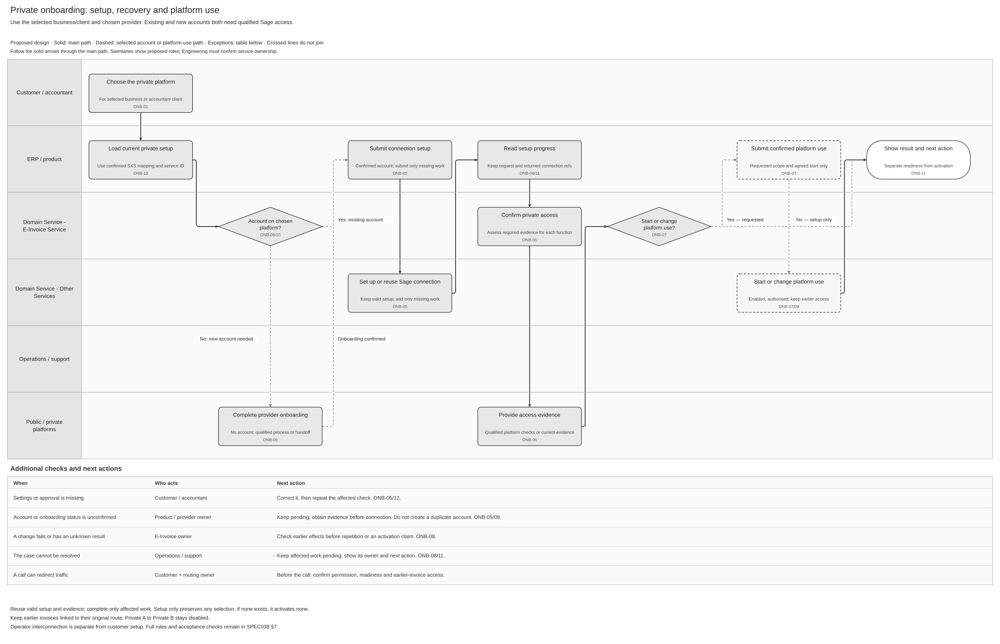

Draft review. Settings interaction is intended behaviour; supported actions and implementation still need qualification. No publication performed.
Customer Onboarding and Connectivity Logical Feature Specification
Summary — 037 · API reuse — 039
Revision overview — Phases 1–3
This view combines SPEC-SEI-019 and SPEC-SEI-035. It keeps their scenarios and activity IDs. Detailed API contracts and historical analysis remain in their linked sources; they are not repeated here. The predecessors are unchanged. Scope and open decisions are unchanged.
1 Purpose and authority — Phases 1–3
Let a business or its authorised accountant set up Sage access to its chosen e-invoicing platform. Reuse valid setup, ask only for missing information and show what is ready or needs action. This avoids repeated registration and unintended provider changes.
Phase coverage: 1 — SPFE public solution; 2 — external private providers; 3 — Sage private-platform offering. Labels show analysis coverage, not delivery approval or confirmed API availability. REF-PHASE. Private A to Private B stays disabled. Invoice sending, receiving, reporting and full exit belong to separate features. REF-PRODUCT.
E-invoicing settings — intended interaction
The intended product interaction is one E-invoicing settings area in the customer's Sage product, for the selected business or authorised accountant's client. Customers can review their current setup and request the following supported actions. The exact menu location, screen design and implementation remain to confirm with the product team. SPEC037's settings overview is the primary home of the shared diagram.
Customers must not have to start separate onboarding and offboarding requests to complete one switch. Before confirmation, show what will change, what will remain, the proposed start and how earlier invoices will be handled. Settings must show progress, any failed or pending step, and who must act next. Ending a connection does not automatically cancel a product subscription or platform agreement; show and confirm those actions separately where applicable.
Offer only enabled actions for the selected country, platform, business and caller. An unsupported action must explain the limitation and available next step. This settings model does not enable private A → private B switching or assert that all listed actions are implemented. Incident response can also start outside settings; OFF-S10 still permits urgent action under incident authority.
This section owns the complete customer switch journey (ONB-S06). The onboarding and offboarding specs each retain their detailed checks. A switch scenario in the offboarding table describes the old-service responsibilities within this journey; it is not another customer process.
For a request to stop services without a replacement platform, use Disconnect or stop a service and the relevant SPEC032 — Customer-action scenario. Do not create a switch request just to process a cancellation. SPEC039 — Supported change owns the API reuse assessment; API reuse does not change this customer-journey ownership.
2 Terms used — Phases 1–3
NIF identifies the business. Permission determines who may act for it. Readiness means Sage has passed the checks for a requested function. Activation separately authorises use of a platform for future work. A saved connection does not prove both. Other terms use the shared glossary.
Spain business structures and identity examples
These examples distinguish establishments, legal entities and accountant/client relationships. They do not prescribe how many entities a dataset contains. 039 GAP-01/02 must confirm whether each case uses one or several datasets and connections. France SIREN/SIRET rules do not define the Spain mapping.
3 Scope — Phases 1–3
3.1 In scope — Phases 1–3
The customer and an authorised accountant use the same paths. Batch processing is optional.
3.2 Decisions and open questions — Phases 1–3
Spain connection model: 039 GAP-02 owns the open decision. Scenario outcomes do not select the API resource model.
Phase 2 — unlisted provider: Product and the local technical lead must decide whether to show only supported providers or allow an “Other provider” request. Until support is confirmed, do not offer a connection. REF-PROVIDERS. Implementation questions are in 039 §2.
4 Feature wide functional requirements and rules — Phases 1–3
Product integration preconditions: before enabling e-invoicing, each product must integrate SXS for datasetId / tenantId management and Tax certificate management / Connections Service for credential setup and protected use. These product integrations precede customer onboarding. Accountants need a permitted mapping for each client. They do not replace customer permission or require a certificate where the selected function does not need one. B2B lookup/readiness interfaces still need confirmation. User direction, 26–27 October 2026; REF-INTEGRATION.
Reuse current evidence only for the same business, action and environment. Keep customer statements separate from observed results. A failed lookup means “not confirmed”, not “does not exist”. Spain rules and test credentials must not affect other countries or production. ONB-R01/03/12/14/24; OFR-R09/10.
5 Cross cutting quality and operational requirements — Phases 1–3
Keep client data and permissions separate. Protect certificate keys and secrets. Save requests and results so a restart or repeated request does not duplicate work. Record who changed what and when. Security and Operations must confirm retention, retry limits and support ownership before release. ONB-NFR01–05.
6 Feature activities — Phases 1–3
6.1 ONB-01 Capture requested functions — Phases 1–3
Save the business, requested setup and environment. Prefill valid information and ask only for missing or changed inputs. An unchanged repeated request returns its saved result; conflicting changes require review.
6.2 ONB-02 Check business identity and authority — Phases 1–3
Check the NIF, caller identity and permission separately. For an accountant, also check the current firm role and client relationship. Login or certificate ownership alone does not prove permission. SPFE-S02 Article 11.
6.3 ONB-12 Coordinate client approval and evidence — Phases 1–3
If approval is missing, ask an eligible person for the specific action. Changed, expired or withdrawn approval cannot authorise new work; stop affected work when client access ends. Local approval does not replace official representation. Approval flow.
6.4 ONB-10 Assess current setup — Phases 1–3
Resolve the company's SXS dataset/client mapping before dataset-scoped credential lookup or access-point calls. Reuse the company mapping when adding a platform; apply the resource relationships decided under 039 GAP-01/02. Missing mapping follows the qualified channel/SXS setup process; an unavailable lookup remains pending. Compare existing public, private and Sage setup; check only missing, changed or expired items. Do not create another account to repair an unknown result.
6.5 ONB-03 Assess prerequisites — Phases 1–3, where required

Run these shared checks before public or private setup. Use the Tax certificate service where a certificate is required: confirm its dates, suitability and permitted use for this business and environment. Reuse a protected reference. Missing, expired or revoked material needs correction; an unavailable lookup remains pending. Authentication, signing and permission are separate checks. REF-TRUST; SPFE-S02.
6.6 ONB-04 Publish public readiness — Phase 1; reused in Phases 2–3

Return readiness only for the functions whose mandatory checks passed, including actual Sage support. Name any limitation and next action. The supplied public contracts contain no onboarding enrolment operation; do not invent one or send a test invoice. Web-form access does not prove automated access. SPFE-S03/S08/S16.
If no qualified evidence can establish access for a requested function, keep that result unconfirmed and name the action owner. 039's WSDL assessment records the operation evidence, limits and GAP-05/06 owners; 039 §5 defines the contract-specific checks. This is a proposed readiness control, not an external onboarding contract.

The private path links the selected provider account and checks access. Keep valid accounts and credentials. Before a call that can redirect traffic, check permission and continued access to earlier invoices. Setup can finish without activating a route. REF-CONNECTIVITY.
For Phase 3, if Sage offers the private-platform service, first confirm the named legal operator, permitted interfaces, security and operations under PRD-SEI-221. A customer connection does not establish operator eligibility. REF-OPERATOR.
6.8 ONB-06 Prove private readiness — Phases 2–3
Confirm provider access for each requested function. A saved connection alone is insufficient. Where a change affects receiving, confirm that the intended destination is reachable before activation.
6.9 ONB-07 Cut over new traffic — Phases 2–3, enabled changes only
For an enabled change, confirm permission, readiness and the effective start. Reject stale or competing changes. Do not reset unchanged setup because its historical start is unknown. ONB-R06/07/25.
6.10 ONB-08 Reconcile and recover — Phases 1–3
6.11 ONB-09 Preserve and release — Phases 1–3
Keep earlier invoices linked to their original platform, evidence and access. Preserve retrieval progress. Release old dependencies only when continuity is confirmed. Apply SPEC032's exit checks within the same switch request when old access or services must end. A standalone full exit follows SPEC032 without requiring a replacement-platform journey.
6.12 ONB-11 Return results and required actions — Phases 1–3
Show each requested function's result, missing item and next action/owner. Preserve independent successful results. Connection, readiness and activation remain separate. Read the current saved result after a lost notification; later use must recheck permission and certificate validity.
6.13 ONB-13 Manage portfolio batch — Phases 1–3
For an accountant batch, save the client list before returning a receipt. Check permission and process each client independently. Correction or cancellation for one client must not repeat completed work or block other safe clients. A receipt is not completed setup; disclose only currently authorised results. Batch flow.
7 Traceability and supporting artefacts — Phases 1–3
The activities above define the journey. Use the existing sources for detailed checks rather than copying them into this view.
ONB-R25 correction: this ID retains its effective-start meaning from SPEC-SEI-002. The second use in archived 019 for operator interconnection is instead referenced by PRD-SEI-221 FR20 and ONB-A44/A45.
Operator interconnection handoff — Phase 3 operator scope
This is separate from customer setup. Where Article 9 applies, the receiving operator must make the connection operational within one month from receipt. If additional requests cannot be handled simultaneously, Article 9(4) requires receipt order; each queued request's month starts when the preceding interconnection becomes operational. Pending interconnection uses the required public exchange path. Compliance and Operations own timing and completion evidence under PRD-SEI-221 FR20; setup API success does not complete that duty. REF-PRIVATE; ONB-A44/A45.
Review and release gates — Phases 1–3
Before enabling a path, demonstrate its main outcome, correction, unknown-result recovery and client isolation. Also check that Spain rules do not change another country's behaviour. Close the applicable existing release checks and 039 implementation questions. These are required checks, not tests already passed.
REF Source references — Phases 1–3